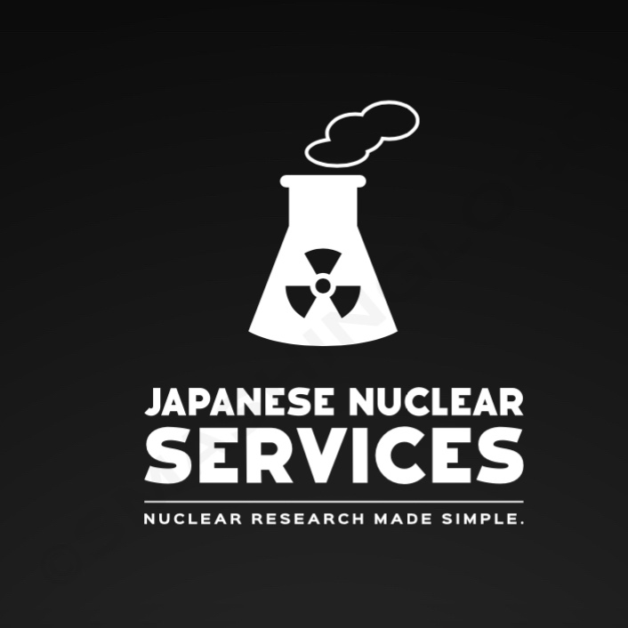

Japanese Nuclear Services
Welcome to Japanese Nuclear Services, a company in close collaboration with Marcel Nuclear Testing and Research. Our mission is to provide cutting-edge nuclear services in Japan, leveraging the expertise and innovation of our partner. We specialize in a wide range of nuclear testing and research activities, always with a strong emphasis on safety and precision.
With this collaboration, you can trust us to deliver state-of-the-art solutions in the field of nuclear science. Whether it’s nuclear testing, research, or related services, we’re dedicated to advancing the industry while adhering to the highest safety standards.
@MarcelBossASG, CEO